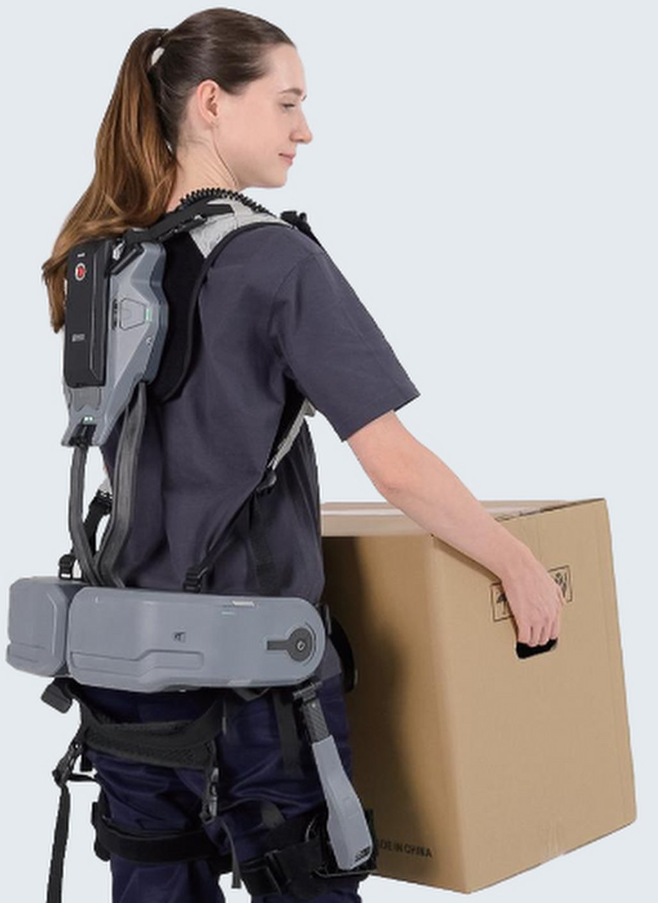

01
Digital human models
We use MyoFullBody from MuscleMimic, a full-body MuJoCo model driven by 416 muscles. Fitted to each person's motion capture, it gives the load on every spinal joint.
AnyMotion Lab and BioDynamics Lab, NJIT
Back-support exoskeletons struggle in the field because their control is one-size-fits-all. We train one adaptive controller in simulation, across many body sizes, loads and lifts, so it adjusts its assist to each worker. Then we run it on a commercial active exoskeleton.
The problem
Musculoskeletal disorders (MSDs) come from repetitive lifting, awkward postures and heavy loads. Public safety reports from one of the largest warehouse operators show how big the problem still is.
57%
of recordable injuries are MSDs.
The 2025 report still says “more than half.”
−43%
MSD rate over six years.
Yet MSDs “remain our primary focus.”
5%
less lower-back force from power-zone picking.
Lower-back load is already tracked. An exo lowers it at every lift.
Source: Amazon workplace safety reports on 2023 data, 2024 data and 2025 data.
The yardstick
3.4 kN
L5/S1 disc compression that NIOSH uses to define increased low-back injury risk.
It is the biomechanical basis of the Revised NIOSH Lifting Equation.
Waters et al., Ergonomics 1993
Our models estimate the load at L5/S1 for every lift, with and without the exo.
Which tasks come close to the limit, and how far the exo brings them down.
Ergonomic risk assessments already use NIOSH criteria. Our output speaks the same language.
Why exos struggle
In the lab
~20%
less back-muscle activity during lifting, on average.
25% with active exos, 18% with passive. Tested mostly on healthy young men.
Kermavnar et al., Ergonomics 2021 (review of 33 studies)
On the floor
Rule-based control can jump to a large torque at once. Uncomfortable, even unsafe.
Same assist for every worker, load and lifting style.
Spine load is rarely measured on the job, so injury prevention is hard to show.
Same support for every lift. Resists walking and sitting, and cannot react to load.
Simple rules (e.g., more help the more you bend), set on a few lab subjects. Ignore who lifts and how heavy.
Fits one person, but takes hours of testing per worker and per task. Too slow for a workforce.
What is needed: one controller that adapts to each worker's size, load and technique, needs no tuning sessions, gives smooth and stable torque, and cuts spine load.
Our approach

01 / 03
01
We use MyoFullBody from MuscleMimic, a full-body MuJoCo model driven by 416 muscles. Fitted to each person's motion capture, it gives the load on every spinal joint.
02
Each model wears the exo. One controller learns by trial and error, across thousands of worker, load and technique combinations, before anyone wears the device.
03
Our controller drives the FIT HV motors live. Test in the lab first, then on the floor.
Progress
90
lifting trials from 10 people, on our fast GPU software.
Tracks body markers more closely than OpenSim (19.9 vs 26.2 mm).
r = 0.99
match between our L5/S1 load and force plates.
The same joint the NIOSH limit is set at.
−25%
less lower-back effort with exo assist (20 N·m per hip).
In simulation, same lift with and without assist.
Live
control of the FIT HV motors from our own software.
So a controller trained in simulation can run on the real device.
Exo results are from simulation.
Working together
One possible first step: we share the pipeline, you run it on a few real tasks in-house, and we test the exo on matching mock tasks in our lab before any floor trial.